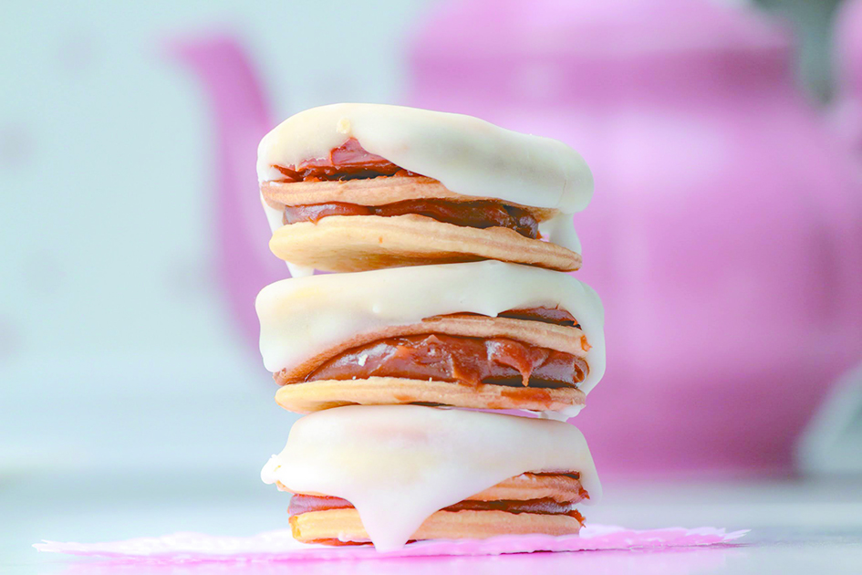

Alfajores santafesinos

Aquí les comparto mi fórmula de estos ricos alfajores Santafesinos para endulzar un poco este día.
Ingredientes
- Masa: 500 gramos harina 0000.
- 5 yemas.
- 5 gramos sal fina.
- 50 cc licor de caña o coñac.
- 100 gramos de manteca derretida.
- 120 cc agua.
- 1 clara.
- 200 gramos de azúcar impalpable.
- Unas gotas de jugo de limón.
- 200 gramos azúcar granulada + 50 cc agua.
- 500 gramos de dulce de leche repostero
- 40 cc coñac o algún licor de tu gusto.
Pasos
- para la masa vamos a hacer una corona con la harina y sal, en el centro colocar todos los demás ingredientes húmedos. Amasar energicamente hasta lograr una masa lisa y homogénea que no se pegue.
- Descansar 15 minutos, sobar y estirar con pastalinda hasta que quede bien fina, que quiera empezar a transparentar.
- Cortar con cortante de 6 a 8 cm, pinchar bien y hornear a 180 grados hasta que apenas doren y hagan globitos.
- Rellenar con dulce de leche formando los típicos alfajores santafesinos triples. De tres capas de masa, dos de dulce de leche.
- Atención con el glase!! Una vez listo hay que usarlo ya que seca rápido! Aquí va la fórmula: hacer un glasé común con la clara, gotas de limón y azucar impalpable, llevar a hervir los 200 de azúcar común con los 50 de agua, que hierva de 2 a 4 minutos.
- Volcar caliente sobre el glasé de clara y batir rápido, vaba quedar fluído pero comenzará a secar rápido, bañar los alfajores, escurrir y listo!!